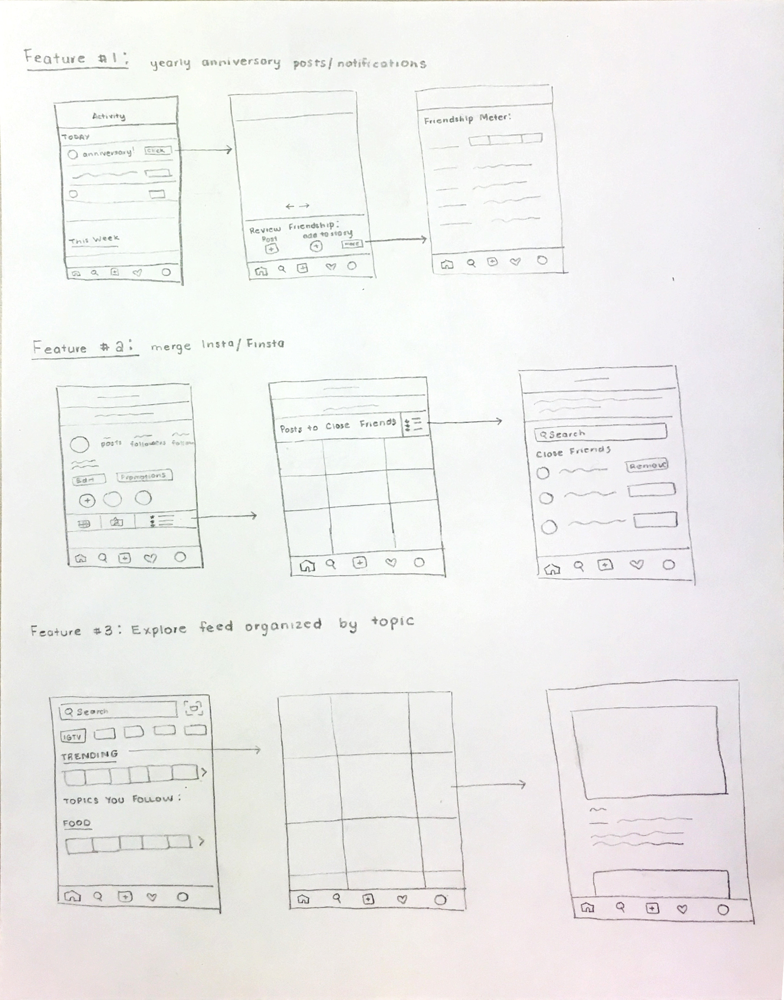

Role
product designer
Time
8 weeks
Platform
Feature
merging Rinsta & Finsta
Overview: As one of the most popular social media platforms, Instagram is primarily based on photo-sharing to connect users with their followers and followings. Having garnered millions of users, the Instagram that we knew today has undergone a variety of changes in the last decade, such as the logo change and the inclusion of stories and close friend lists.
The feature that I am introducing is essentially merging "Rinsta" and "Finsta" together on one account. In order to merge these two, I designed a feature that enables users to post to their close friends list, which essentially acts as a "Finsta" for users because accounts within the close friends list are those that the users want to post separate and (most likely) more personal content.
product thinking
Back when Instagram had its old logo and its old interface, users were used to small follower bases, chronological posts, and Finsta-esque content.
Today, when people have a close social network, they want to be able to see specific posts so that they can maintain meaningful relationships; however, this has become increasingly hard to do so, as the growth of Instagram means that the use of Instagram has shifted - people have been focusing on the number of likes on post and the images that they present themselves as on the platform.
Current Status Quo & Key User Insights
brainstorming
From my user research, I recognized that individuals wished to pursue sincere relationships with their friends on Instagram, but have a difficult time because they do not have the environment and space to do so.
Brainstorming Session
I enlisted my two friends, Derek and Jessy, to help me with my brainstorming session. After sorting through How-Might-We questions, we came up with three opportunity areas:
From these solution spaces, I explored a variety of solutions via low-fidelity sketches:
From these low-fidelity sketches, I chose the feature: merge Insta and Finsta. In terms of feasibility and impact, this feature had the highest value because it fit into the existing scope of Instagram and addresses the forementioned problem space. The close friends feature is a pre-existing feature within Instagram, and adding features to it is both highly feasible and highly impactful. Additionally, adding this feature will encourage more meaningful relations because users who post to their close friends list have a separate platform to share different and more personal content with a subset of their followers.
interaction design
To figure out how to implement this feature, I explored a variety of ways of how this feature would fit into the platform:
With this information hierarchy, I explored a variety of entry points and flows using medium-fidelity mockups.
Most of the considerations for these explorations focus on organizing the content and distinguishing between close friends and regular users. Since this new feature focuses the addition of posting to another “account”, it is crucial to provide visual distinction for the users on pages where engagement is highest.
user testing
With these medium fidelity explorations, I conducted user testing to better identify pain points in distinguishing between close friends and regular users.
Explorations from User Feedback
One of the confusions for the user included the separation of the home and the close friend feed. To merge two accounts, visual distinction for the accounts is necessary. On the posting page, home feed, and DMs, users prefer to have some contrast between their close friends and regular users so that there is a separation of content to these two groups.
Another focus from the user feedback was content organization; the ability to “sort” the content on certain pages, such as the home feed, the followings tab, or the DMs page enables the user to gain visual distinction between certain users and better provide clarity.
visual design
One of the elements that users found confusing was the visual distinction between close friends and regular users. I included a variation of visual designs to distinguish between the two on various pages.
These explorations improve the visibility of the close friend icon via color and pattern distinction. In choosing which visual design to pursue, I considered how the designs would fit into the current context and design of Instagram, and I ended up going with the center exploration above.
final iteration
Putting user feedback and visual design together, I came up with a final iteration to prototype.
The final interaction showcases how this feature would fit into the context of Instagram; the users have visual distinction between posting to close friends, and can separate the content for each “account”. Moreover, it provides users with one account with which they can share to different audiences.
Users can post to either their close friend group or their regular account; users without a close friend group would automatically not have the option to post to the group.
On both the home feed and DMs page, the user can sort the posts and/or DMs by close friends to better access such content.
From the profile page, the user can easily find friends via the "close friend" category in the "followings" tab. On the profile page, a user without a close friend list would automatically not have the close friend list feed tab show up on their profile page.
The full prototype can be found here.
As social media becomes more focus on trends, there is always a want from users to find and establish meaningful connections via these platforms. Enabling one cohesive platform for users to distinguish between content and users on Instagram encourages more real-life interactions, and help bring back a side of Instagram that we all once knew.
View the full case study on Medium